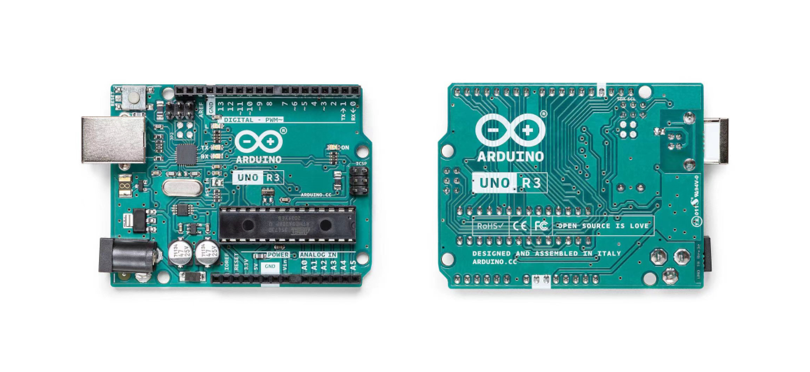

1.Layout

Under "Choose a role", select the repository role to grant to the team or person

The Arduino UNO
Looking at the board from the top down, this is an outline of what you will see (parts of the board you might interact with in the course of normal use are highlighted):
- Analog Reference pin (orange)
- Digital Pins 2-13 (green)
- Digital Pins 0-1/Serial In/Out - TX/RX (dark green) - These pins cannot be used for digital i/o (digitalRead and digitalWrite) if you are also using serial communication (e.g. Serial.begin).
- Reset Button - S1 (dark blue)
- In-circuit Serial Programmer (blue-green)
- Analog In Pins 0-5 (light blue)
- Power and Ground Pins (power: orange, grounds: light orange)
2.Software
- External Power Supply In (9-12VDC) - X1 (pink)
- Toggles External Power and USB Power (place jumper on two pins closest to desired supply) - SV1 (purple)
- USB (used for uploading sketches to the board and for serial communication between the board and the computer; can be used to power the board) (yellow)
- S4A
- Mblock
- BlockyDuino
- motoduino/motoblockly
- Webduino Blockly
- Visual Studio Code extension for Arduino
In the meantime we can use developers' software as following:
3.Hardware
3.1 Arduino Uno Rev3

3.2 Arduino Uno Rev3

3.3 Arduino Uno Rev3
3.4 Arduino Uno Rev3
3.4 Arduino Uno Rev3
3.4 Arduino Uno Rev3

3.4 Arduino Uno Rev3

3.4 Arduino Uno Rev3
4.Component
4.1 Arduino Uno Rev3
Tinkercad
Tinkercad is a user-friendly, web-based 3D design and modeling tool. It's suitable for beginners and educators, allowing users to create 3D models by dragging and dropping shapes. Tinkercad is often used for educational purposes to introduce concepts of 3D design and printing.
Under "Choose a role", select the repository role to grant to the team or person
STEP 4: How to collaborate with team
1.Inviting a team or person
Phase 1: Request the username of the individual you're inviting to collaborate.

Under your repository name, click Settings, If you cannot see the "Settings" tab, select the dropdown menu, then click Settings.
In the "Access" section of the sidebar, click Collaborators and teams as displayed

To the right of "Manage access", click Add people or Add teams and In the search field, start typing the name of the team or person to invite, then click a name in the list of matches.

In the search field, start typing the name of the team or person to invite, then click a name in the list of matches.

Under "Choose a role", select the repository role to grant to the team or person

Under "Manage access", next to the team or person whose access you'd like to remove, click Remove

Using this search box, you can easily find your team member